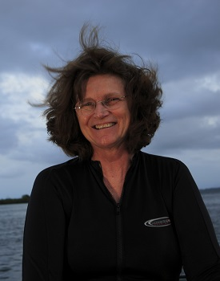

Dr. Nancy Knowlton is a marine scientist, specializing on coral reefs. She is the Smithsonian’s Sant Chair for Marine Science. Ms. Knowlton graduated from Harvard University and the University of California, Berkeley. After being a professor at Yale, she joined the Smithsonian Tropical Research Institute in Panama. She is the author of the book
I found about Nancy Knowlton after reading an article at sciencemag.org about coral reefs being in trouble. I started researching more about them and came across one of Knowlton’s videos explaining their endangerment.
I reached out to her with some questions and recently had a conversation with her about coral reefs and their endangerment. I asked her about what would happen to animals that reside in and depend on coral reefs. Her response was it depends on the animal and what the animal needs from the coral reefs. Some may just be looking for a place to hide and they can find it elsewhere, but others could have deeper needs such as food or nutrients and if those reefs went extinct, so would animals that get significant needs from coral reefs. This opened my eyes and I realized,